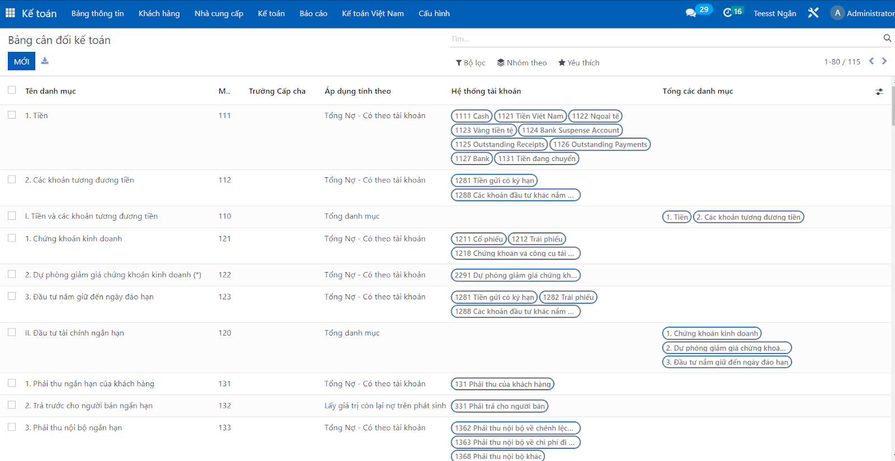
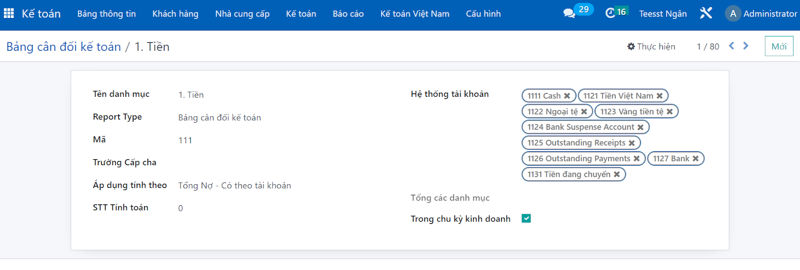
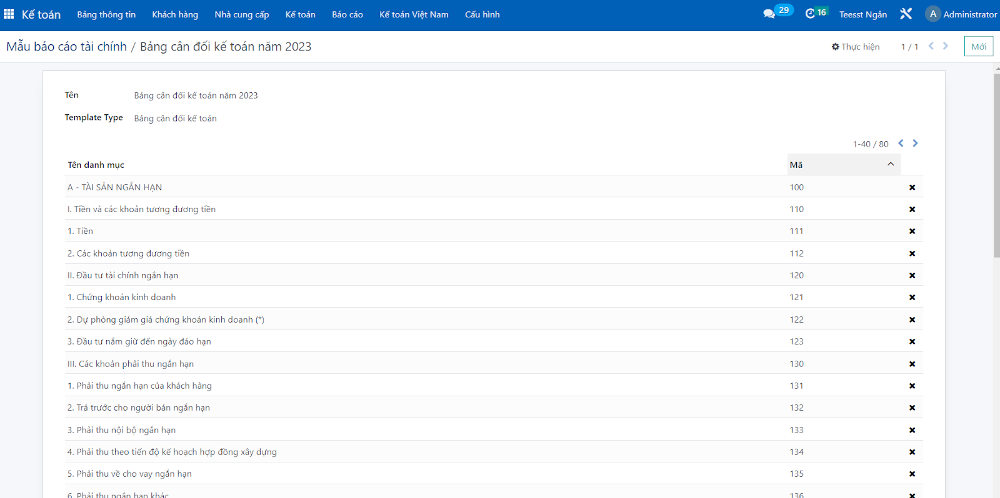
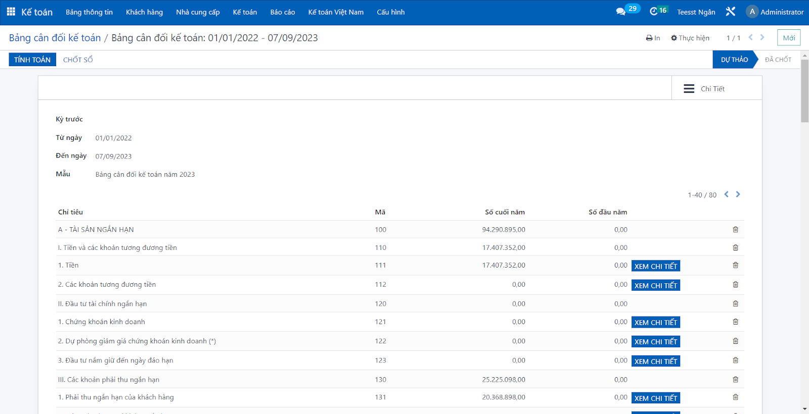

The module will automatically design reports based on the latest Circular 200 form of the accounting system, including results from main business activities and results from financial and other activities of the enterprise.
Create available targets
The system automatically creates available indicators based on the form of Circular 200


Create sample reports
Users choose the indicators shown on the report depending on the purpose of use and are most suitable for the business

